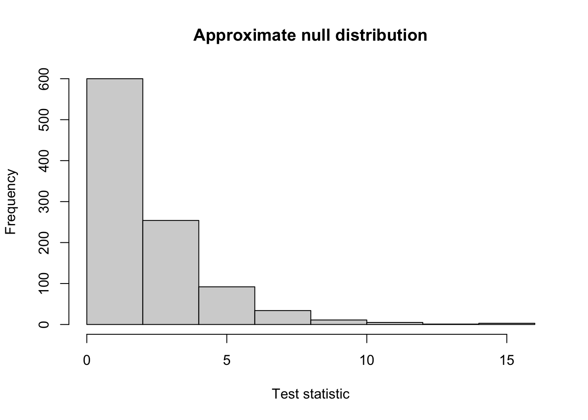

Exam 1 review questions
Below are questions to help you study for Exam 1. These are some examples of the kinds of questions I might ask.
- This is not a practice exam.
- The questions cover most, but not all, possible material for the exam.
- The distribution of questions here is not necessarily reflective of the distribution of questions on the actual exam.
Data
Our data today come from the 2015 Gorkha earthquake in Nepal. After the earthquake, a large scale survey was conducted to determine the amount of damage the earthquake caused for homes, businesses and other structures. This is one of the largest post-disaster surveys in the world, and today we will be using it to determine what characteristics were associated building damage.
The data contains information on 10000 buildings, with the following variables:
age: the age of the building (in years)area_percentage: normalized area of the building footprintheight_percentage: normalized height of the building footprintland_surface_condition: a categorical variable recording the surface condition of the land around the building. There are three different levels: n, o, and t. (The researchers who collected the data anonymized the level names to protect inhabitants’ privacy).foundation_type: type of foundation used while building. Possible values: h, i, r, u, w. (The researchers who collected the data anonymized the level names to protect inhabitants’ privacy)roof_type: type of roof used while building. Possible values: n, q, x. (The researchers who collected the data anonymized the level names to protect inhabitants’ privacy)count_families: number of families that live in the buildinghas_secondary_use: whether the building was used for any secondary purpose (0 = no, 1 = yes)Damage: whether the building sustained any damage (1) or not (0)
Choosing and interpreting a model
- A collaborator is interested in modeling the probability that a building sustained any damage, based on building age and surface condition. Write down a population regression model that would allow them to explore this research question.
Solution:
\[Damage_i \sim Bernoulli(\pi_i)\]
\[\log \left( \dfrac{\pi_i}{1 - \pi_i} \right) = \beta_0 + \beta_1 Age_i + \beta_2 SurfaceO_i + \beta_3 SurfaceT_i\]
- You fit the model for your collaborator in R, producing the following output (model 1). Interpret each of the coefficients in the fitted model in terms of the odds of damage.
Model 1:
Estimate Std. Error
(Intercept) 1.420845 0.105823
age 0.065166 0.003191
land_surface_conditiono -0.230243 0.205150
land_surface_conditiont -0.442394 0.105703
Null deviance: 7250.4 on 9999 degrees of freedom
Residual deviance: 6600.8 on 9996 degrees of freedomSolution:
- The estimated odds of damage for a building that is 0 years old, with surface condition N, is \(\exp\{1.421\} = 4.141\)
- A one-year increase in the age of the building is associated with an increase in the odds of damage by a factor of \(\exp\{0.0652\} = 1.067\) (i.e., a 6.7% increase in the odds), holding surface condition constant
- Holding age constant, buildings of surface condition O have lower odds of damage than buildings of surface condition N, by a factor of \(\exp\{-0.230\} = 0.795\) (i.e., the odds are lower by 20.5%)
- Holding age constant, buildings of surface condition T have lower odds of damage than buildings of surface condition N, by a factor of \(\exp\{-0.442\} = 0.643\) (i.e., the odds are lower by 35.7%)
- Describe a plot you could use to assess the shape assumption for this model. Make it clear in your description which variables or quantities would be plotted on the graph, and how you would use the plot to assess the shape assumption.
Solution: The shape assumption could be assessed either with an empirical logit plot (before we fit the model), or with a quantile residual plot.
An empirical logit plot groups the observations by binning a numerical explanatory variable, then plots the observed log odds for observations in each bin against the mean of the variable in that bin. A linear relationship suggests that the shape assumption is satisfied, whereas a non-linear relationship suggests we need a transformation.
A quantile residual plot creates a (randomized) quantile residual for each observation in the data, by comparing the predictions from the model against the true observed responses. These residuals can then be plotted against an explanatory variable, or against the fitted values. The plot is interpreted like the usual residual plots from linear regression models: we are looking for a random scatter of the residuals around 0, with no clear patterns.
- For the type of plot described in question 3, sketch a hypothetical example plot which suggests that a transformation is needed for an explanatory variable.
Solution: See examples from class, e.g. Sept. 8
(For the remainder of the questions, you may assume that the shape assumption is satisfied for the earthquake data).
Predictions
- Calculate the estimated probability of damage for a 50 year old building with surface condition = t.
Solution: The estimated log odds of damage is
\[1.420845 + 0.065166(50) -0.442394 = 4.237\] and so the estimated probability of damage is
\[\widehat{\pi_i} = \dfrac{e^{4.237}}{1 + e^{4.237}} = 0.986\]
- Using model 1, the predicted probability of damage for a specific building is 0.80. For this building, which observed outcome would result in a higher Cook’s distance: Damage = 0, or Damage = 1?
Solution: Remember that Cook’s distance identifies unusual points – that is, observations that do not follow the trend predicted by the model. If the predicted probability is 0.80, then we would expect Damage = 1. The more unusual observation, and therefore the observation with a higher Cook’s distance, would have Damage = 0.
- Below is a confusion matrix for the predictions from the model, created using a threshold of 0.85. Calculate accuracy, sensitivity, specificity, and positive predictive value. How well does the model seem to be predicting?
True Damage
Predicted Damage 0 1
0 755 2682
1 423 6140Solution:
- Accuracy: (755 + 6140)/10000 = 0.69
- Sensitivity: 6140/(6140 + 2682) = 0.70
- Specificity: 755/(755 + 423) = 0.641
- PPV: 6140/(6140 + 423) = 0.936
Overall the model is doing ok at predicting damage (certainly better than random guessing). The accuracy is 69%, which means that 69% of our predictions on the original data are correct. While accuracy is not a very useful measure of performance when classes are imbalanced (as they are here – there are many more Damaged buildings than undamaged buildings), the within-class predictive abilities (sensitivity and specificity) are both similar (70% and 64%, respectively), so we are doing about the same at predicting damaged buildings as undamaged buildings.
- Explain how sensitivity and specificity would change if we decreased the threshold used to make the confusion matrix.
Solution: Sensitivity increases (more buildings are classified as “Damaged”), and specificity decreases (fewer buildings are classified as “Undamaged”)
Inference
- Calculate and interpret a 95% confidence interval for the change in odds of damage associated with a one standard deviation increase in building age, holding surface condition fixed. The standard deviation of building age in the data is 19.64 years, and the critical value for a 95% confidence interval is \(z^* = 1.96\).
Solution: First, make a 95% confidence interval in terms of a one-year increase and the log-odds:
\[0.0652 \pm 1.96 (0.0032) = (0.059, 0.071)\]
Next, multiply both sides of the interval by the standard deviation of building age (19.64), to get the interval in terms of the log-odds and a one-standard deviation increase:
\[(0.059 \cdot 19.64, 0.071 \cdot 19.64) = (1.16, 1.39)\]
Finally, exponentiate to get the interval in terms of the odds:
\[(e^{1.16}, e^{1.39}) = (3.19, 4.01)\]
So: we are 95% confident that an increase in age by a standard deviation is associated with an increase in the odds of damage by a factor of between 3.19 and 4.01, holding surface condition constant.
- Your collaborator now wants to know whether there is a relationship between surface condition and building damage, after accounting for building age. Write down null and alternative hypotheses, in terms of one or more model parameters, that allow you to address this question.
Solution:
\[H_0: \beta_2 = \beta_3 = 0\] \[H_A: \text{at least one of } \beta_2, \beta_3 \neq 0\]
To help you test the hypotheses in question 10, below is the output for two other regression models on the same data. You may or may not need to use all of the output provided.
Model 2:
Estimate Std. Error
(Intercept) 2.36548 0.09793
land_surface_conditiono -0.34877 0.20053
land_surface_conditiont -0.40014 0.10344
Null deviance: 7250.4 on 9999 degrees of freedom
Residual deviance: 7234.1 on 9997 degrees of freedomModel 3:
Estimate Std. Error
(Intercept) 1.039066 0.047770
age 0.065061 0.003191
Null deviance: 7250.4 on 9999 degrees of freedom
Residual deviance: 6620.7 on 9998 degrees of freedom- Calculate the AIC and the log-likelihood for model 2.
Solution:
- AIC = 7234.1 + 2(3) = 7240.1
- log-likelihood = deviance/(-2) = 7234.1/(-2) = -3617.05
- Define the null deviance, and explain why the null deviance is the same for all three models.
Solution: The null deviance is the deviance of the intercept-only model (no explanatory variables). All three models have the same intercept-only model (because they have the same data and response variable), and so they all have the same null deviance.
- Calculate a test statistic that allows you to address the hypotheses in question 10. What will be the distribution of the test statistic? If the distribution depends on certain parameters (e.g., a mean and variance, or degrees of freedom) make sure to specify these in your answer.
Solution: We’re testing multiple coefficients, so we need to use a drop-in-deviance test.
\[G = \text{deviance}_{reduced} - \text{deviance}_{full} = 6620.7 - 6600.8 = 19.9\]
We are testing 2 parameters here, so under the null hypothesis, \(G \sim \chi^2_2\)
- Below is an approximate null distribution for the test statistic. Based on this null distribution, would the test statistic you calculated in question 13 be unusual under the null hypothesis? Explain your reasoning.
Solution: Yes; we can see that a value of 19.9 would be far in the right tail of this null distribution, so it would be very unusual.
Maximum likelihood practice question
This question is separate from the earthquake data discussed above.
Suppose we have a variable \(Y\) which can take three possible outcomes: \(Y = -1, 0\), or 1. We also know that:
- \(P(Y_i = -1) = \pi\)
- \(P(Y_i = 0) = 5\pi\)
- \(P(Y_i = 1) = 1 - 6\pi\)
where the parameter \(\pi\) is unknown. We observe data
\[1, 1, 0, 0, 1, 0, 1, -1, -1, -1\]
and we want to estimate \(\pi\) from the data.
- Write down the likelihood function \(L(\pi)\) for the observed data.
Solution:
\(L(\pi) = P(\text{data} | \pi) = P(1, 1, 0, 0, 1, 0, 1, -1, -1, -1 | \pi) = P(1 | \pi)^{4} P(0 |\pi)^{3} P(-1 | \pi)^{3}\)
We know that, given \(\pi\), \(P(Y = 1) = 1 - 6\pi\), \(P(Y = 0) = 5\pi\), and \(P(Y = -1) = \pi\). Substituting,
\(L(\pi) = (1 - 6\pi)^4 (5\pi)^3(\pi)^3 = 125\pi^6(1 - 6\pi)^4\)
- Compute the maximum likelihood estimate \(\widehat{\pi}\) from the observed data.
Solution:
First, take the log:
\(\log L(\pi) = \log(125) + 6 \log(\pi) + 4 \log(1 - 6 \pi)\)
Now differentiate with respect to \(\pi\):
\(\dfrac{d}{d\pi} \log L(\pi) = \dfrac{6}{\pi} + \dfrac{4}{1 - 6 \pi}(-6) = \dfrac{6}{\pi} - \dfrac{24}{1 - 6\pi}\)
Now set equal to 0 and solve for \(\pi\):
\(\dfrac{6}{\pi} - \dfrac{24}{1 - 6\pi} = 0\)
\(\dfrac{6}{\pi} = \dfrac{24}{1 - 6\pi}\)
\(6 - 36\pi = 24\pi\)
\(\pi = 6/(36 + 24) = 6/60 = 1/10\)
So, our maximum likelihood estimate is \(\widehat{\pi} = 0.1\)